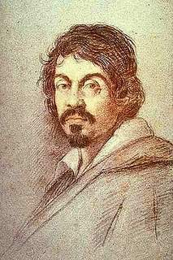

David vencedor de Goliat
Galeria
Formulari
Creador
Inici
Descripció
David vencedor de Goliat
Cap a 1600. Oli sobre llenç, 110,4 x 91,3 cm.
El tema representat en aquesta pintura apareix descrit en la Bíblia (Samuel I.17). Correspon al moment quan el jove pastor David dóna mort amb la seva fona al gegant Goliat i li talla el cap per exhibir-la en triomf. L'episodi de lligar els cabells del gegant per mostrar el cap no té antecedents iconogràfics i no té menció explícita en el text bíblic. És una mostra més de l'originalitat de Caravaggio i de la seva independència. Aquesta pintura va figurar per primer cop en l'inventari del palau del Bon Retiro de Madrid en 1794. S'ignora la seva història anterior, però s'ha suposat, amb reserves, que pogués procedir de la col·lecció de Joan Baptista Crescenzi, arribat a Madrid en 1617, on va morir en 1635, i ben conegut per la seva predilecció pels artistes moderns, és a dir, naturalistes, o del comte de Villamediana, que va estar a Itàlia de 1611 a 1615 e que, segons Bellori, va posseir un David de Caravaggio. Més improbable és que es tracti del David de Caravaggio que en 1643 va deixar en el seu testament monsenyor Galeotto Rospigliosi. La presència a Espanya de la pintura està testificada per algunes còpies antigues, totes realitzades en el context espanyol. Durant el segle XIX aquest llenç va estar atribuït a l'escola del Caravaggio. Encara que va ser reintegrat al catàleg del mestre italià, alguns crítics ho van considerar còpia antiga d'un original perdut. La confirmació de la seva autoria va ser aportada per Mina Gregori, en donar a conèixer la radiografia que mostra la primera versió del cap del gegant amb una expressió dramàtica, amb els ulls desorbitats i la boca oberta en un gest espantós, anàleg al de Medusa ( Florència, Galleria degli Uffizi) o al d'Holofernes (Roma, Galleria Nazionale d`Arte Antica), en els quals Caravaggio encerta a expressar l'horror del dolor físic. Potser el canvi d'expressió es degui al fet que qui va fer l'encàrrec considerés el gest inicial massa violent, en qualsevol cas la radiografia certifica que el llenç és original de Caravaggio. S'ha subratllat la contenció expressiva que mostra el cap en ombra en contrast amb l'habitual David vencedor, i l'atapeïda composició, que no té correspondència més que en el Narcís (Roma, Galleria Nazionale d`Arte Antica) amb el seu esquema geomètric, com aquí, a rectangle. Quant a la data de la pintura, tots els crítics són unànimes en considerar-la d'etapa relativament juvenil, oscil·lant entre 1596 i 1600 (Text extractat Pérez Sánchez, AI a: El Prat en el Ermitage, Museu Nacional del Prat, 2011, pp . 98-99).
Autor
Caravaggio. Michelangelo Merisi
Milà, 1571 - Porto Ercole, Grosseto, 1610
Va revolucionar la pintura en un sentit realista i va tenir influència fonamental en nombrosos artistes del segle XVII. Va ser aprenent de Simone Peterzano de 1584 a 1588 i va aprofitar també les obres d'altres pintors llombards. A mitjan 1592 es va traslladar a Roma, on no hi ha notícies documentals directes fins 1599. Amb altres pintors, especialment Giuseppe Cesari, anomenat Cavaller d'Arpino, va formar companyia per vendre les seves obres, de mida petita, amb la figura sola d'un noi representat amb tot realisme, incloses llums des de l'esquerra i colors clars. "La bonaventura" (Pinacoteca Capitolina, Roma) i "Els tramposos" (Kimbell Art Museum, Fort Worth, Texas) van suscitar l'atenció del cardenal Francisco de la Muntanya cap a 1595, que va ser el seu mecenes i el va allotjar en el seu palau fins 1600. Gran amant de les arts, li va encarregar diverses obres de gènere (Música, Metropolitan Museum of Art, Nova York), religioses ( "Santa Catalina", Museu Thyssen-Bornemisza, Madrid) o mitològiques (decoració de la seva casino) i li va proporcionar altres distingits clients: el cardenal Borromeo (Fruiter, Pinacoteca di Brera, Milà), el banquer Costa, el marquès de Giustiniani i els cardenals Barberini i Aldobrandini. Al costat d'un major domini espacial i més emoció dramàtica, cap a 1598 va enfosquint els fons i abandona la claredat precedent. El mateix de la Muntanya va facilitar en el 1599 el seu primer encàrrec de caràcter públic: les pintures de Sant Mateu de la capella Contarelli (Sant Lluís dels Francesos). Tot i que no estava acostumat a les grans teles i figures nombroses, va aconseguir obres mestres que el van fer famós -vocació i martiri- per la seva interpretació radicalment cristiana i d'humà realisme. Va seguir en 1600 un altre encàrrec públic de cardinal Cerasi per a la seva capella de Santa Maria del Popolo: "Vocació de Sant Pau" i "Martiri de Sant Pere", que van confirmar la seva capacitat per interpretar el fet sagrat amb insuperable emoció dramàtica, com a situació transcendental en la vida de l'home. A inicis de 1601, els germans Mattei, en el palau va viure fins 1605, es van convertir en els seus nous mecenes ( "Sopar a Emaús", 1601, National Gallery, Londres; "Captura de Crist", 1602, National Gallery of Ireland, Dublin ).
Retrat de Caravaggio

Zoom obra